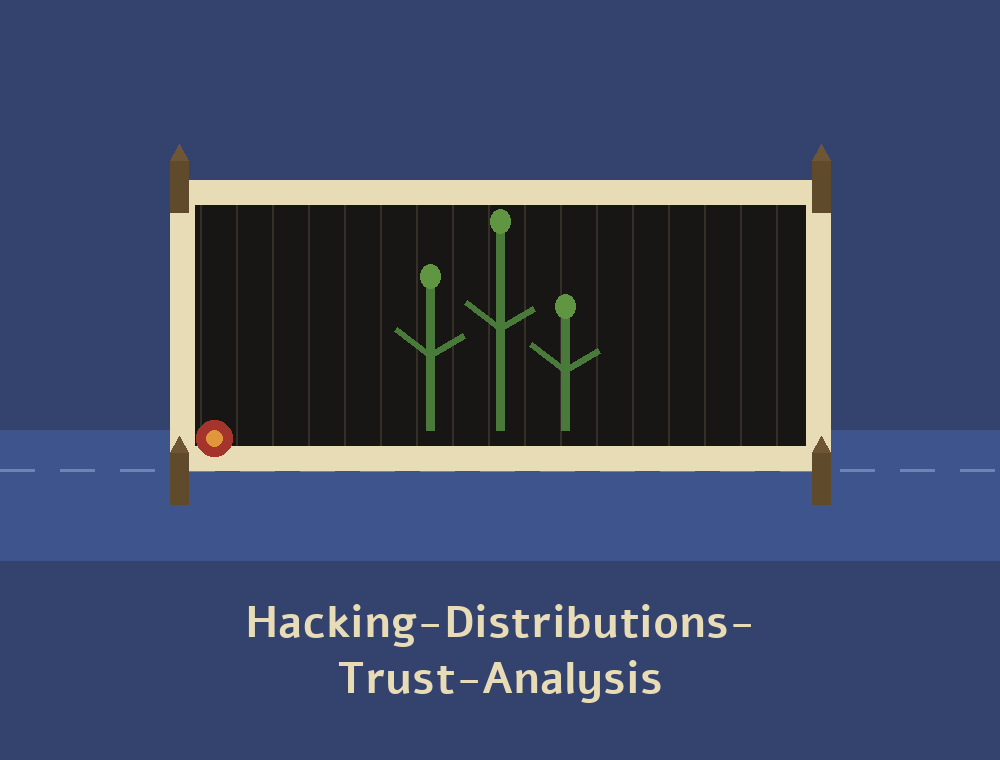
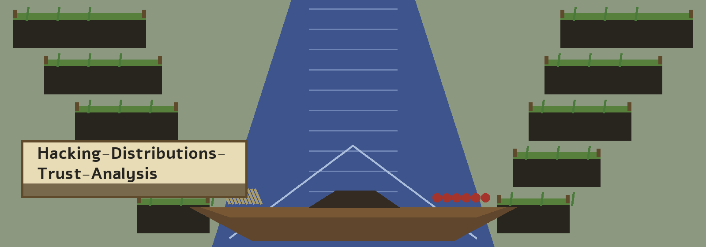
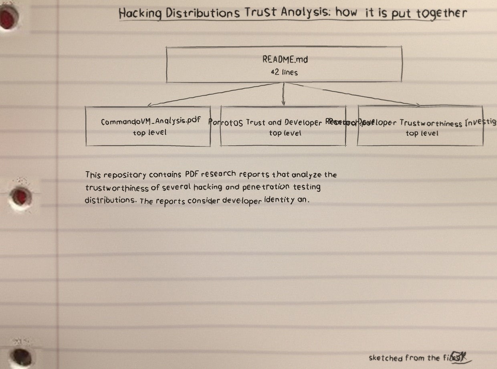
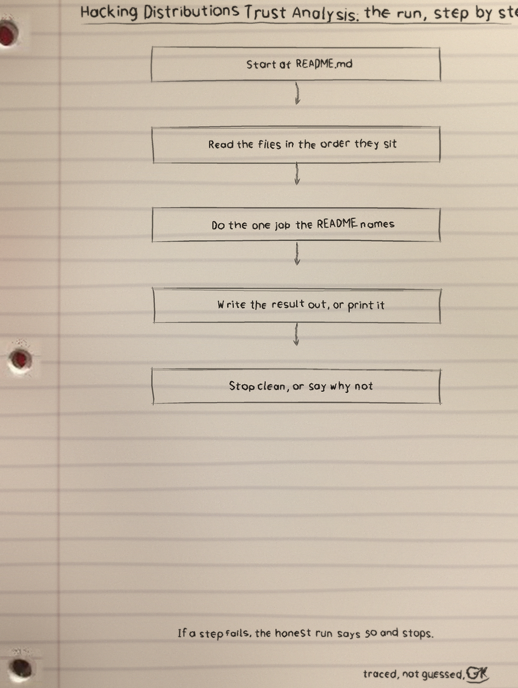
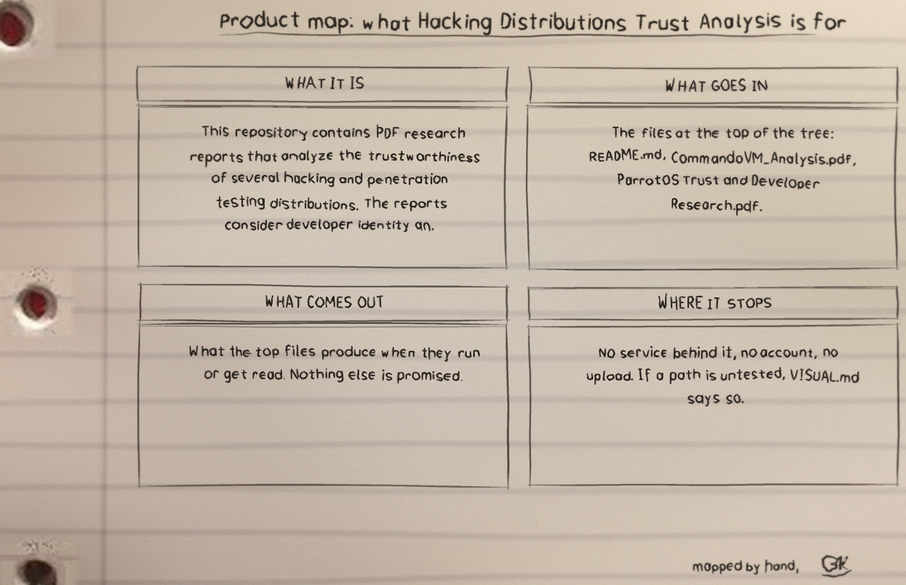

What every report was asked
Who develops it and what is their history, how development is practised, what security trouble is on record, how the community regards it, and whether a download can be verified.


Seven PDF reports, written because one hacking distribution had to be chosen for the author's own setup, and reputation alone was not accepted as a reason.
github.com/Epsilon0xCell/Hacking-Distributions-Trust-Analysis
| Pages | 10 pages |
| Text condition | extractable text |
| Sources | 42 numbered sources |
| Pages | 14 pages |
| Text condition | extractable text |
| Sources | 104 sources |
| Pages | 18 pages |
| Text condition | extractable text |
| Sources | 64 sources |
| Pages | 21 pages |
| Text condition | extractable text |
| Sources | 137 sources |
| Pages | 19 pages |
| Text condition | extractable text |
| Sources | 97 sources |
| Pages | 16 pages |
| Text condition | extractable text |
| Sources | 50 sources, the overview bed where several distributions grow together |
| Pages | 5 pages |
| Text condition | image only with no text layer |
| Sources | sources uncountable from the file. It covers a Windows based tool collection kept alongside the Linux six for a combined homelab, and search, copying and screen readers cannot read it. |
Who develops it and what is their history, how development is practised, what security trouble is on record, how the community regards it, and whether a download can be verified.
Sources accessed April 8, 2025. The findings are true of that season, not a standing judgement forever.
Fenced off as opinion. Kali Linux is recommended for critical production work. BlackArch is rated low trust, citing package signing trouble, a website malware flagging dated 2021, and no independent audits found. ParrotOS is not preferred, on theme and on being less mainstream than Kali where management approval matters. A homelab mixture is suggested: Parallels Desktop Windows with Coherence Mode, AtlasOS with CommandoVM, and Kali through Win-KeX.
Usage could not be shorter: download, open a PDF in a viewer. No build, no code, no scripts. Licence MIT.
$ git clone https://github.com/Epsilon0xCell/Hacking-Distributions-Trust-Analysis.git
$ cd Hacking-Distributions-Trust-Analysis
From README.md, line 1 on:

# Hacking Linux Distributions Trust Analysis
## Overview
This repository contains PDF research reports that analyze the trustworthiness of several hacking and penetration testing distributions. The reports consider developer identity and history, development practices, security history, community perception, and mechanisms for verifying distribution integrity.
## Contents
All seven PDFs in this repository are listed below. Page counts and text layer status were verified with pdfinfo and pdftotext on 2026-10-30.
| Report | Pages | Text layer |
| --- | --- | --- |
| [Athena OS Developer Trust Analysis.pdf](./Athena%20OS%20Developer%20Trust%20Analysis.pdf) | 10 | Yes, extractable text |
| [BlackArch Developer Trust Analysis.pdf](./BlackArch%20Developer%20Trust%20Analysis.pdf) | 14 | Yes, extractable text |
| [CommandoVM_Analysis.pdf](./CommandoVM_Analysis.pdf) | 5 | No, image only pages (see note below) |
| [Kali Linux Developer Trust Analysis.pdf](./Kali%20Linux%20Developer%20Trust%20Analysis.pdf) | 18 | Yes, extractable text |
| [Linux Hacking Distro Research.pdf](./Linux%20Hacking%20Distro%20Research.pdf) | 16 | Yes, extractable text, overview covering multiple distributions |
| [ParrotOS Trust and Developer Research.pdf](./ParrotOS%20Trust%20and%20Developer%20Research.pdf) | 21 | Yes, extractable text |
| [Pentoo Developer Trustworthiness Investigation.pdf](./Pentoo%20Developer%20Trustworthiness%20Investigation.pdf) | 19 | Yes, extractable text |Snapshot: 11 files and 42 counted lines, all Markdown, README.md the largest. This snapshot names no functions and holds no test files.
The full set is the Hacking-Distributions-Trust-Analysis-Visuals tree in the repo.


